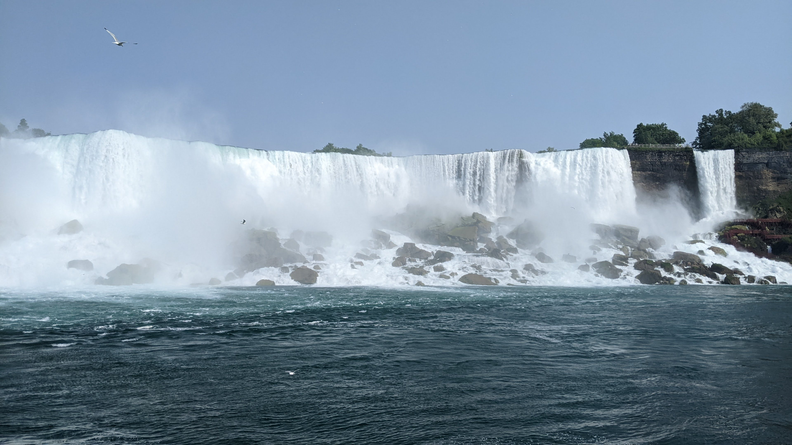
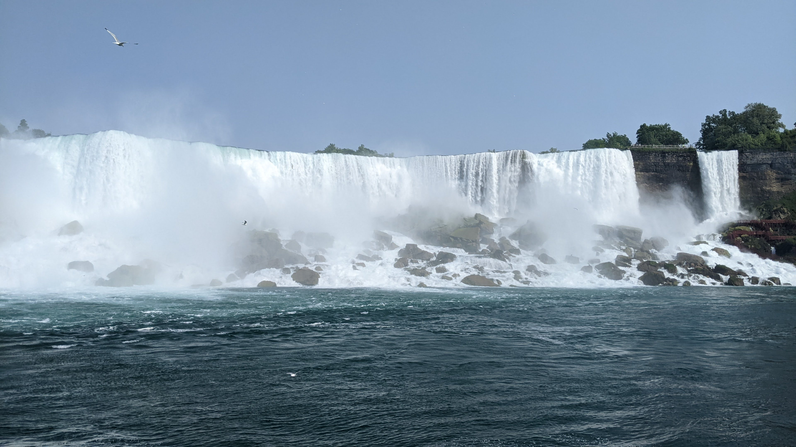

Meet the dogs
Felicity, Assistant Puppy
This is Felicity. Her interests include shredding cardboard, picking up sticks, and belly rubs. She already has a job lined up for when she graduates her puppy class, but she is currently in the market for permanent teeth. (Update: she now has all 42 of them!)Finnick, Distinguished Dog Emeritus
This is Finnick. He was well regarded for his ability to be both small and cute, not to mention an expert in walks.Ballroom Dance
I am an amateur ballroom dancer, and I have competed across the eastern US. I started dancing with the Tufts Ballroom Team in college. Here are some pictures of me dancing for Tufts with my wonderful former dance partner Joan.


At Emory, I helped to grow the Emory Ballroom Club and prepare its members to dance at competition. In Spring 2019, we had two couples compete for the first time at Georgia Tech, and in Spring 2020 we had more! Covid-19 presented a setback, but the club began actively dancing once again in Fall 2021 and has brought several competitors to competitions both near and far in the years since!


Photos
Luminy, June 2025
Banff, December 2024
Scotland, June 2024 and 2025
Niagara Falls, June 2023

 

Berkeley, February 2023
San Diego, December 2022
Arizona, since March 2022

Vermont, October 2021
Colorado, March 2020

Atlanta, since 2018